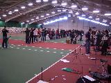
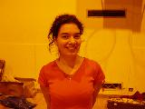
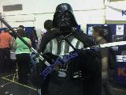
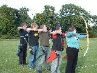
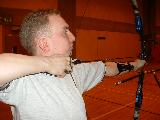

More photos available in Picasa Album.
Please select a gallery to view by clicking on a thumbnail below
 | SUS Outdoors 2007 SUS Outdoors held in St Andrews, 5th May 2007. As photographed by Stewart Barclay. Started on: 10-05-2007 |
 | Outdoor Training Heriot Watt 23/April/2007 Outdoor Training Heriot Watt 23/April/2007 Started on: 25-04-2007 |
|  | BUSA Indoors 2006, Exeter Snaps of shenanigans in Exeter, en route and otherwise! Started on: 09-03-2006 |
| The Sublime to the Ridiculous Random pictures of... well... random things.... with not so random people! Started on: 08-12-2005 | |
| SUS League Match, Edinburgh Uni, 26-11-2005 The crazy crew, fronted by Stewart, Big Ian and Ross in descending order of apparent size! Taken at Edinburgh University Sports Centre before the start of the league match Started on: 01-12-2005 | |
|  | Practice session at QMUC #2 17/Oct/2005 Practice session at QMUC Started on: 25-11-2005 |
|  | Freshers' Fayre Freshers' Fayre 2005 Started on: 25-11-2005 |
|  | Practice Session at Heriot Watt Practice session at Heriot Watt on 07/Jul/2005 Started on: 25-11-2005 |
|  | Practice Session at QMUC Practice session on 11/Apr/2005 at Queen Maragaret's Started on: 25-11-2005 |